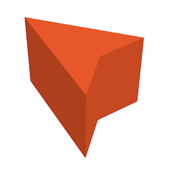

View on GitHub
View on GitHub Prism Class Reference
Prism Class Reference
Prism
A Prism is a class that allows the creation of any type of prism.
It requires a 2D list of points that will be used to build that path. If
there are N points, there will be N+1 Line segments as the last and the
first point will always be joined.
- Example:
let points = [
Vector2(0,1.2),
Vector2(1.0,-1.2),
Vector2(0,-0.8),
Vector2(-1.0,-1.2)
]
let prism = Prism(
position: Vector3(50, 25, 0),
heading: 0,
points: points,
height: 2,
color: UIColor(red: 1.0, green: 0.29, blue: 0.03, alpha: 1.0)
)
self.mapView.add(prism)
The results in:

-
The direction the
Prismis pointing toward.0being north andPi / 2pointing east.Declaration
Swift
public fileprivate(set) var heading: Radians -
The height of the
Prismin meters.Declaration
Swift
public fileprivate(set) var height: Float -
The color that the Prism is drawn with.
Declaration
Swift
public fileprivate(set) var color: UIColor -
Required by the
FocusableApi.Declaration
Swift
public var focusPoints: FocusPoints -
The position vector of the Overlay
Declaration
Swift
public var vector: Vector3 -
Which Map this Overlay belongs to, this will only exist if the ImageOverlay’s position was set using a
CoordinateDeclaration
Swift
public var map: Map? -
Only exists if the Overlay position was set with a
CoordinateDeclaration
Swift
public var coordinate: Coordinate? -
Initialize a new
Prismobject.Declaration
Parameters
positionThe location in a Map or Venue where this
Prismis. This may be aVector3or aCoordinateheadingThe direction the
Prismrotated topointsThe point list that will be used as a path for the outer walls of the
Prism. These will be extruded upwards.heightThe height of the
Prismin meterscolorWhat color the
Prismwill be draw with -
Set the heading, height, or color of the
Prismand animate over a period of time. This is the standard way to change one or more of the parameters.Declaration
Swift
public func set(heading: Radians? = nil, height: Float? = nil, color: UIColor? = nil, over animationInterval: TimeInterval)Parameters
headingThe direction in Radians that the
Prismshould pointheightThe height of the
Prismin meters.colorThe color that the
Prismshould be drawn inoverThe length of time that you wish to animate this update over.
-
Set the position of a of a
Prismusing and animate the change over a a period of time. This is the standard way to change one or more parametersDeclaration
Swift
public func set(position: Vector3, heading: Radians? = nil, height: Float? = nil, color: UIColor? = nil, over animationInterval: TimeInterval)Parameters
positionThe desired position of the
Prismin map space. This will exist in every map use aCoordinatefor the position to make this show up on only one specific map.headingThe direction in Radians that the
Prismshould pointheightThe height of the
Prismin meters.colorThe color that the
Prismshould be drawn inoverThe length of time that you wish to animate this update over.
-
Set the position of a of a
Prismusing and animate the change over a a period of time. This is the standard way to change one or more parametersDeclaration
Swift
public func set(position: Coordinate, heading: Radians? = nil, height: Float? = nil, color: UIColor? = nil, over animationInterval: TimeInterval)Parameters
positionThe desired position of the
Prism. This makes it appear in this spot only on the map associated with the Coordinate.headingThe direction in Radians that the
Prismshould pointheightThe height of the
Prismin meters.colorThe color that the
Prismshould be drawn inoverThe length of time that you wish to animate this update over.
-
Set the position to a locations
Deprecated:
Use
setas it is functionally equivalent but also follows Apple’s named conventions.Declaration
Swift
public func setPosition(to position: Vector3, over animationInterval: TimeInterval)Parameters
toThe desired position of the
PrismoverThe time interval used to animate between the current look of the
Prismto the one set here -
Set the position to a locations
Deprecated:
Use
setas it is functionally equivalent but also follows Apple’s named conventions.Declaration
Swift
public func setPosition(to position: Coordinate, over animationInterval: TimeInterval)Parameters
toThe desired position of the
PrismoverThe time interval used to animate between the current look of the
Prismto the one set here -
Set the position to a locations
Deprecated:
Use
setas it is functionally equivalent but also follows Apple’s named conventions.Declaration
Swift
public func setHeading(to heading: Radians, over animationInterval: TimeInterval)Parameters
toThe desired position of the
PrismoverThe time interval used to animate between the current look of the
Prismto the one set here -
Set the height of the
Prism, animated over a time frame.Deprecated:
Use
setas it is functionally equivalent but also follows Apple’s named conventions.Declaration
Swift
public func setHeight(to height: Float, over animationInterval: TimeInterval)Parameters
heightThe height of the
Prismin metersoverThe time interval used to animate between the current look of the
Prismto the one set here -
Set the color of the
Prism, animated over a time frame.Deprecated:
Use
setas it is functionally equivalent but also follows Apple’s named conventions.Declaration
Swift
public func setColor(to color: UIColor, over animationInterval: TimeInterval)Parameters
colorWhat color the
Prismwill be draw withoverThe time interval used to animate between the current look of the
Prismto the one set here